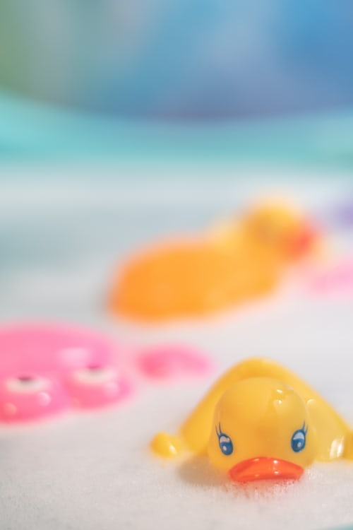

Panda Fun© Activity Sheets
Week 1 - Experimenting with Floating and Sinking

Activity 2 - Ducks float on water but not everything does!
- Inside: Collect some small toys/objects and drop them in a washing up bowl/baby bath/sink/bath. Your child can help with the collection and once they understand the game go and collect other items.
- Outside: Take a plastic bag or food box on a country walk or path and ask your child to pick up /collect items on the walk to put in the bag/box (eg stone, leaf, feather, twig, acorn, conker, etc). If there is a safe place near water or on a bridge get the child to drop each item into the water to see what happens. If not take them home and do it there.
Expansion: If you are doing this at home help your child to sort into 2 piles (things that sink/things that float) or for older children ask them to do this before dropping in water and then test their hypothesis.
Extension for oldest children (even school age). They will know that normally play dough sinks - Can you make it float? They may need a hint to think about the shape.
There is a Dough recipe in the Appendix.
Week 2 - Road Vehicles and Road Safety
Activity 2 - Games to develop listening skills (Prerequisite to phonics)Play a STOP/GO Game: You can play this in the house or in the garden with your toddler/pre-schooler but babies will enjoy the movement if you carry them and you can even play with your child in the pram.
- Ask your child to walk (or ride/sit on toy) round the room/garden but stop as soon as you shout STOP. They can only go again when you say GO.
- Take it in turns – your child will enjoy giving the instructions.
- You can vary the game by carrying a soft toy or pushing a car or other vehicle.
- Point out all the sounds you hear – leaves rustling, your dog barking, a motorbike, a bird chirping, a child yelling, a siren, etc. You can point out things to your baby as you hear them.
- Ask older children to listen for 30 seconds (phone timer) remember the sounds and tell you at the end.
Simon Says: You probably remember this from your childhood. Your child has to do everything Simon Says.
- You can vary the game and/or get your child to follow instructions by getting a favourite toy or puppet to give instructions. (Teddy says)
- For older children Simon could give two (or 3) instructions together. e.g. touch your toes, spin round and sit down. Sing Nursery Rhymes together e.g The Wheels on the Bus